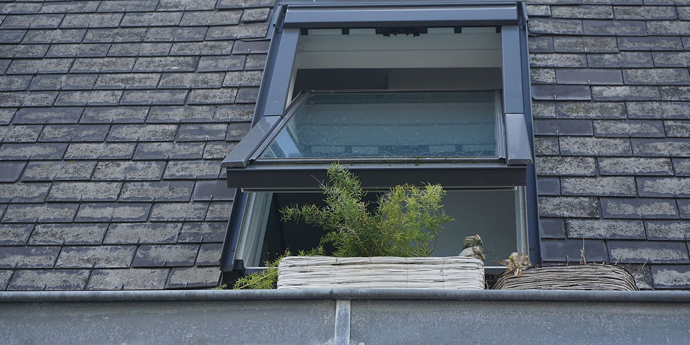

За запитомЗапитати
Розділ
Мансардні вікна
Мансардні вікна VELUX: Оптіма, Стандарт і Стандарт Плюс. Оберіть розмір і розташування ручки.
Ціни, фото й наявність взято зі старого каталогу, перед запуском їх звіряють з обліковою системою.

Серії й розміри
Ціни за розмірами у трьох серіях. Натисніть ціну, щоб відкрити вікно з потрібною серією, розміром і ручкою.
Верхня ручка
| Розмір, см | Оптіма | Стандарт | Стандарт Плюс |
|---|---|---|---|
| 55×78 | 6 110 ₴ | 9 110 ₴ | 12 910 ₴ |
| 55×98 | 6 510 ₴ | 9 710 ₴ | 13 760 ₴ |
| 66×98 | 7 110 ₴ | 10 790 ₴ | 15 290 ₴ |
| 66×118 | 7 270 ₴ | 11 270 ₴ | 15 970 ₴ |
| 78×98 | 7 350 ₴ | 11 030 ₴ | 15 630 ₴ |
| 78×118 | 7 900 ₴ | 11 990 ₴ | 16 990 ₴ |
| 78×140 | 8 870 ₴ | 12 830 ₴ | 18 180 ₴ |
| 78×160 | немає | 14 870 ₴ | 21 070 ₴ |
| 94×118 | 10 090 ₴ | 14 030 ₴ | 19 880 ₴ |
| 94×140 | 10 910 ₴ | 14 990 ₴ | 21 240 ₴ |
| 114×118 | немає | 14 750 ₴ | 20 900 ₴ |
| 114×140 | 11 400 ₴ | 16 420 ₴ | 23 280 ₴ |
Нижня ручка
За запитомЗапитати
За запитомЗапитати
від 500 ₴
За запитомЗапитати
За запитомЗапитати
від 1 860 ₴
від 14 230 ₴
від 4 980 ₴
від 2 680 ₴
від 3 480 ₴
від 1 560 ₴
від 2 680 ₴
від 2 680 ₴
За запитомЗапитати
від 3 480 ₴
від 3 480 ₴
5 070 ₴
5 580 ₴
11 150 ₴
У цій добірці поки немає товарів.